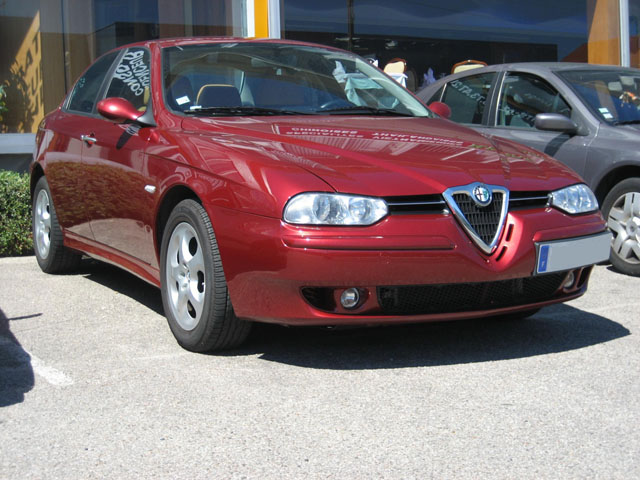
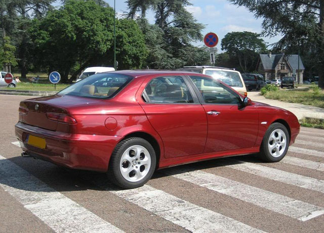
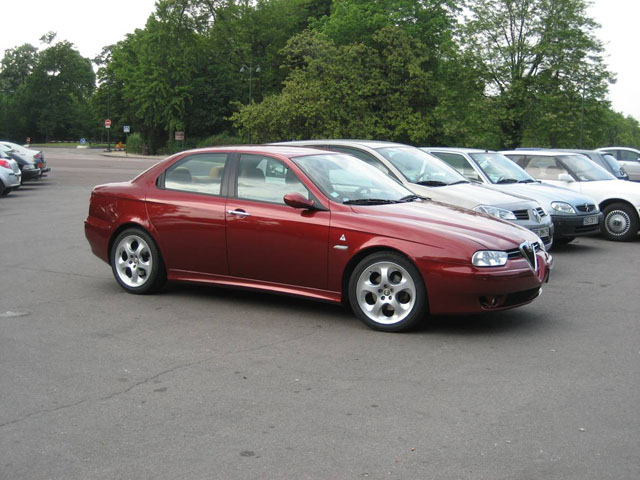
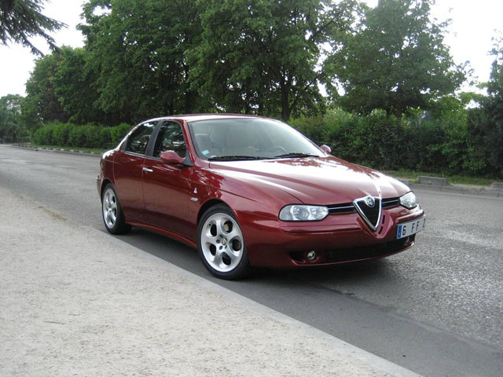

Alain from Paris / FRANCE
Here's my ALFA, this is a 1800 Twin Spark made in 2003. This car is fantastic ! Leather Momo finish inside Color Rosso proteo
I bought 17" Original Selespeed wheels and an Eibach Pro-Kit ( - 30 mm), not installed actually



Submitted: 2007
![[Prev]](bw_prev.gif)
![[Index]](bw_index.gif)
![[Next]](bw_next.gif)